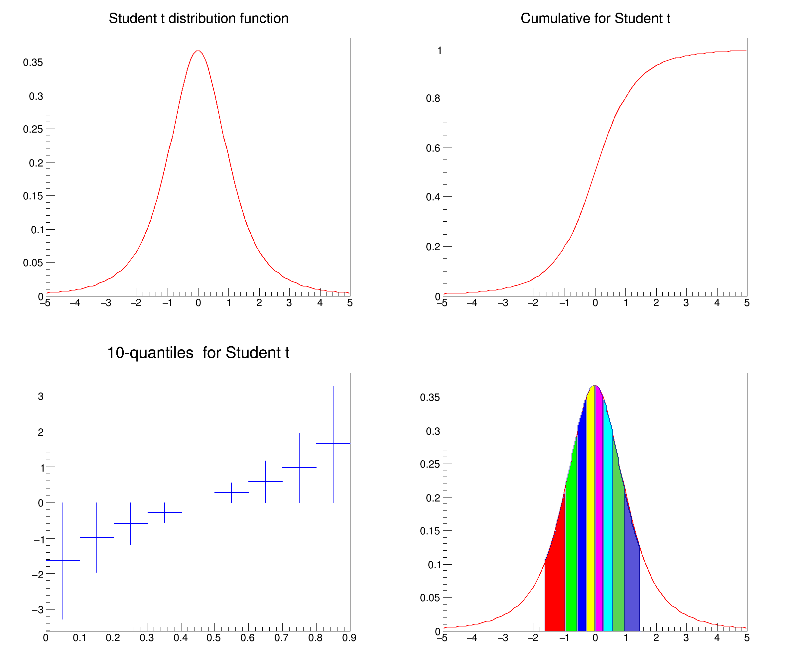

Example macro describing the student t distribution
Example macro describing the student t distribution
It draws the pdf, the cdf and then 10 quantiles of the t Student distribution
based on Magdalena Slawinska's tStudent.C

from ROOT import TH1D, TF1, TCanvas, kRed, kBlue
import ROOT
ROOT.Math.MathMoreLibrary.Load()
n = 100
a = -5.
b = 5.
pdf =
TF1(
"pdf",
"ROOT::Math::tdistribution_pdf(x,3.0)", a, b)
cum =
TF1(
"cum",
"ROOT::Math::tdistribution_cdf(x,3.0)", a, b)
quant =
TH1D(
"quant",
"", 9, 0, 0.9)
for i in range(1, 10):
3.0))
xx = []
xx.append(-1.5)
for i in range(1, 9):
xx.append(quant.GetBinContent(i))
xx.append(1.5)
pdfq = []
for i in range(9):
nbin = int(n * (xx[i+1] - xx[i]) / 3.0 + 1.0)
name = "pdf%d" % i
pdfq.append(
TH1D(name,
"", nbin, xx[i], xx[i+1]))
for j in range(1, nbin):
x = j * (xx[i+1] - xx[i]) / nbin + xx[i]
Canvas =
TCanvas(
"DistCanvas",
"Student Distribution graphs", 10, 10, 800, 700)
pdf.SetTitle("Student t distribution function")
cum.SetTitle("Cumulative for Student t")
quant.SetTitle("10-quantiles for Student t")
Canvas.Divide(2, 2)
Canvas.cd(1)
pdf.SetLineWidth(2)
pdf.DrawCopy()
Canvas.cd(2)
cum.SetLineWidth(2)
cum.SetLineColor(kRed)
cum.Draw()
Canvas.cd(3)
quant.Draw()
quant.SetLineWidth(2)
quant.SetLineColor(kBlue)
quant.SetStats(0)
Canvas.cd(4)
pdfq[0].SetTitle("Student t & its quantiles")
pdf.SetTitle("")
pdf.Draw()
pdfq[0].SetTitle("Student t & its quantiles")
i = 1
for pd in pdfq[1:]:
pd.SetStats(0)
i += 1
pd.SetFillColor(i)
pd.Draw("same")
Canvas.Modified()
- Author
- Juan Fernando Jaramillo Botero
Definition in file tStudent.py.

 ROOT 6.18/03 - Reference Guide Generated on Thu Aug 29 2019 04:10:18 (GVA Time) using Doxygen 1.8.14.
ROOT 6.18/03 - Reference Guide Generated on Thu Aug 29 2019 04:10:18 (GVA Time) using Doxygen 1.8.14.